サーバーワークスエンジニアブログ
https://blog.serverworks.co.jp/
クラウド専業インテグレーター・サーバーワークスの中の人があらゆる技術についてお届けします。
フィード
OU をターゲットにしてデプロイした StackSets から、OU 内の特定の AWS アカウントを除外する
サーバーワークスエンジニアブログ
こんにちは😸 カスタマーサクセス部の山本です。 OU をターゲットにした StackSets から、特定の AWS アカウントのみ削除 StackSets は基本的に OU に対してデプロイするような作りになっています。 例外的に、OU をターゲットにしてデプロイした StackSets から、OU 内の特定の AWS アカウントのみを除外する操作をしてみましょう。 このような例外にも対応できるようになっています。 StackSets の画面を開きます。 「StackSet からスタックを削除」を選びます。※「StackSet」 は英語表記なのに「スタック」はカタカナ表記なのは、機械翻訳による…
1日前

AWS Control Towerで困った話
サーバーワークスエンジニアブログ
はじめに こんにちは。 マルチアカウント環境のベストプラクティスを迅速に展開できるAWS Control Towerは、非常に魅力的ですよね。組織のセキュリティとガバナンスを高いレベルで維持してくれる、まさに"ガードレール"のような存在です。 しかしその一方で、「ここを少しだけ変更したいのに…」といった 細かなカスタマイズが難しい 場面に直面したことはありませんか？ 私自身、実際にそうした壁にぶつかり、試行錯誤した経験があります。 今回は、Control Towerで“変更できなかったポイント”について実例を交えてご紹介します。 同じような悩みをお持ちの方にとって、少しでも参考になれば幸いです…
1日前
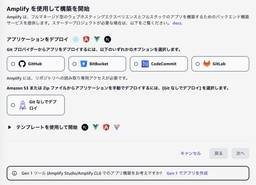
【初心者向け】AWS Amplify Gen2 入門・実践編②——環境構築とプロジェクトファイルの理解
サーバーワークスエンジニアブログ
こんにちは。 アプリケーションサービス本部ディベロップメントサービス2課の濱田です。 梅雨なのに、猛暑ですね。 暑い日には蚊取り線香を焚くのが好きです🌀 実際に効果があるかはともかく、香りが好きで焚いているという側面が大きいです。 はじめに 前回の記事「【初心者向け】AWS Amplify Gen2 入門・実践編①——Webアプリ制作をはじめよう」の続きです。 以下のような方を対象とした連続記事です。 アプリケーション開発の知識がない方 AWS Amplify Gen2 に入門したい方 勉強するよりも、作りながら学びたい方（私のような方） 以下の操作が可能なレベル感の方 git の操作 AWS…
1日前
AWSのIoTサービスを利用して、IoTデータをAWSで活用してみませんか？ 1
1
サーバーワークスエンジニアブログ
CR課の喜多です。営業トークのようなタイトルですが、今回はAWSのIoTサービスをいくつか試用してみたのでご紹介します。導入をご検討の方の参考になれば幸いです。 AWS IoT Core AWS IoT Coreとは 費用 主な利用構成 AWS IoT Sitewise AWS IoT Sitewiseとは 費用 主な利用構成 まとめ AWS IoT Core AWS IoT Coreとは AWS IoT Coreは、IoTデバイスを接続し、メッセージをAWSにルーティングできる、マネージド型のクラウドサービスです。 デバイスのデータ取り込み、変換、フィルタリングを行うためのルールエンジンや、…
1日前
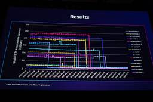
【AWS re:Inforce 2025】AWSの「回復性への執念」は、逆境への備えをどう支えるか (SEC202)
サーバーワークスエンジニアブログ
マネージドサービス部 佐竹です。AWS re:Inforce 2025 に現地参加してきましたので、そのログを順番に記述しています。本ブログは SEC202 How the AWS obsession with resilience helps customers build for adversity のセッションレポートです。特に STS のリージョン分離と改善について紙面を割いて説明しました。
2日前
AWS SES の SendBulkEmail API を使用してEメールを一括送信してみる
サーバーワークスエンジニアブログ
こんにちは😸 カスタマーサクセス部の山本です。 AWS SES の SendBulkEmail API 1. FromEmailAddress : 送信者情報 2. DefaultContent.Template : デフォルトのメールテンプレート 3. BulkEmailEntries : 送信先リスト 1通目 2通目 一括送信スクリプト（Boto3） スクリプトを利用し、 宛先1 万件にメールを送信してみる 送信にかかる時間 受信したメール数と到着までにかかった時間 到着までにかかった時間 バウンス ハードバウンスや苦情が多いとメールを送信できなくなる アカウントの停止状態や、バウンス率、…
2日前
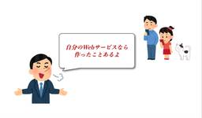
【初心者向け】AWS Amplify Gen2 入門・実践編①——Webアプリ制作をはじめよう
サーバーワークスエンジニアブログ
こんにちは。 アプリケーションサービス本部ディベロップメントサービス2課の濱田です。 最近ヨーグルトメーカーを購入しました🥛 豆乳 or 牛乳パックに少しヨーグルトを入れて一晩放置すると、1Lの大量のヨーグルトができます。おすすめです。 はじめに 先日、AWS Amplify Gen2 の入門記事をこちらに書きました。 blog.serverworks.co.jp こちらの記事はいわば座学編で、AWS Amplify Gen2の何が嬉しいかを直観的に理解することがコンセプトでした。 今回は実践編として、実際に手を動かしてAWS Amplify Gen2 でウェブアプリケーションを作ってみること…
2日前
AWS Summit Japan 2025 参加レポート
サーバーワークスエンジニアブログ
2025年6月25日から26日にかけて、幕張メッセで開催された AWS Summit Japan 2025 に参加した際のレポートです
2日前
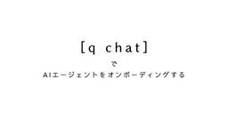
q chatでAIエージェントをオンボーディングする
サーバーワークスエンジニアブログ
Amazon Q DeveloperのAIエージェント"q chat"を活用したプロジェクトのオンボーディング体験をご紹介。AWS環境での迅速かつ効果的なタスク管理を実現します。
3日前
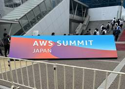
【参加レポート】 AWS Summit Japan 2025 Day2
サーバーワークスエンジニアブログ
こんにちは！マネージドサービス部の加藤（貴）です。 先日、AWS Summitに初めて参加してきたので、その際に聴講したセッションの内容をブログにまとめていきたいと思います！ 本ブログでは、二日目のセッション内容をご紹介します。 一日目のブログはこちらになります。 【参加レポート】 AWS Summit Japan 2025 Day1 - サーバーワークスエンジニアブログ スペシャルセッション ビルダーのための AWS テクノロジー：その深化と進化 モンスターハンターワイルズ 100万以上のユーザー同時接続を支えたネットワークアーキテクチャ (株式会社カプコン) マイクロサービスアーキテクチャ…
4日前
【参加レポート】 AWS Summit Japan 2025 Day1
サーバーワークスエンジニアブログ
こんにちは！マネージドサービス部の加藤（貴）です。 先日、AWS Summitに初めて参加してきたので、その際に参加したセッションの内容をブログにまとめていきたいと思います！ 会場風景 AI ファースト時代に求められるクラウドセキュリティのあり方とは(パロアルトネットワークス株式会社) クラウド環境を取り巻く最新のサイバー攻撃の動向と必要なセキュリティ対策を解説！(クラウドストライク合同会社) 明日から実践できる AWS でのオブザーバビリティ革新 - Amazon CloudWatch Application Signals と OpenTelemetry で実現する次世代オブザーバビリティ…
4日前
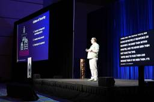
【AWS re:Inforce 2025】AWS はいかにして最も安全なクラウドとしてデザインされるのか (SEC201)
サーバーワークスエンジニアブログ
マネージドサービス部 佐竹です。AWS re:Inforce 2025 に現地参加してきましたので、そのログを順番に記述しています。本ブログは SEC201 Security foundations: How AWS designs the cloud to be the most secure for your business のセッションレポートです。特に、耐量子コンピュータ暗号について紙面を割きました。
4日前
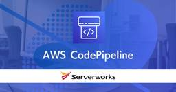
AWS CodePipelineの途中のアーティファクトを確認・差し替える方法
サーバーワークスエンジニアブログ
こんにちは。 アプリケーションサービス部、DevOps担当の兼安です 。 今回はAWS CodePipelineのちょっとしたテクニックをお話します。 本記事のターゲット AWS CodePipelineのアーティファクト アーティファクトの確認と差し替え まとめ 本記事のターゲット 本記事は、AWS CodePipelineを構築中または構築して運用している方をターゲットとしています。 したがって、AWS CodePipelineの基本的な使い方や、AWS CodePipelineの構成要素については割愛しています。 ご了承ください。 AWS CodePipelineのアーティファクト AW…
4日前
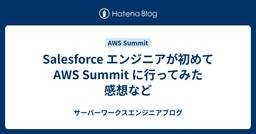
Salesforce エンジニアが初めて AWS Summit に行ってみた感想など
サーバーワークスエンジニアブログ
こんにちは、PE課（プロセスエンジニアリング課）の江利です。 今回はタイトルの通り Salesforce エンジニアが AWS Summit Japan 2025 に行ってみた感想などをお伝えします。 結構な長文になってしまったので目次から気になる段落に飛んでいただけますと幸いです。 AWS Summit とは Day1 基調講演 Day1 通しての感想など お弁当とか持ち物とか 現地でしかできない体験を優先する Day2 Special Session Day2 通しての感想など AFEELA 1 の実車展示。 Serverlesspresso - コーヒーをサーバーレスとともに - IoT…
4日前
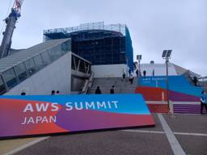
【参加レポート】AWS Summit Japan 2025 Day2（後編：アーキテクチャ道場 2025 - 実践編！）
サーバーワークスエンジニアブログ
6月25日～26日に幕張メッセで開催された年に一度のお祭り「AWS Summit Japan 2025」ですが、私も（数年ぶりに）Day2に行ってきましたので、その様子と特に面白かったセッションについてご紹介いたします。後編は、会場の様子と「アーキテクチャ道場 2025 - 実践編！」のセッションレポートです。
5日前
【参加レポート】AWS Summit Japan 2025 Day2（前編：会場の様子・Aurora DSQL アーキテクチャ詳細）
サーバーワークスエンジニアブログ
6月25日～26日に幕張メッセで開催された年に一度のお祭り「AWS Summit Japan 2025」ですが、私も（数年ぶりに）Day2に行ってきましたので、その様子と特に面白かったセッションについてご紹介いたします。前編は、会場の様子と「Aurora DSQL アーキテクチャ詳細」のセッションレポートです。
5日前
既存の非暗号化EBSボリュームの暗号化手順 1
サーバーワークスエンジニアブログ
こんにちは！カスタマーサクセス本部の加治屋です。 本記事では、AWS環境において、既存の暗号化されていないAmazon EBSボリュームを暗号化する手順について解説します。この作業にはEC2インスタンスの停止・再起動が必要となります。 手順 作業全体の流れは以下の通りです。 既存のEBSボリュームからスナップショットを作成する。 作成したスナップショットを元に、暗号化を有効にした新しいEBSボリュームを作成する。 稼働中のインスタンスから古いボリュームをデタッチし、新しく作成した暗号化ボリュームをアタッチする。 Step 1: スナップショットの作成 まず、対象となるEBSボリュームのスナップ…
5日前
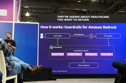
【AWS re:Inforce 2025】生成 AI 本稼働のための Bedrock Guardrails ベストプラクティス (SEC228)
サーバーワークスエンジニアブログ
マネージドサービス部 佐竹です。AWS re:Inforce 2025 に現地参加してきましたので、そのログを順番に記述しています。本ブログは SEC228 Best practices for evaluating Amazon Bedrock Guardrails for Gen AI workloads のセッションレポートです。
5日前
Control Towerの細かい仕様（OU単位のリージョン拒否コントロールがSecurity OUで適用出来ない件）
サーバーワークスエンジニアブログ
こんにちは、最近お腹周りが気になりだした今野です。 はじめに みなさん、Control Towerは活用されてますでしょうか？ エンタープライズ企業のアカウント管理部門に所属されている方であればご活用されている方も多いでしょうし、一度は利用を検討したことはあるはずです。 本ブログでは、「OU単位のリージョン拒否コントロールがSecurity OUで適用出来ない」というControl Towerの仕様に焦点を当ててご紹介していきます。*1 前提知識の確認 Security OU Security OUとは、Control Towerによって自動で作成されるOU（Organizational Un…
5日前
【初心者向け】RDSバックアップの整理
サーバーワークスエンジニアブログ
はじめに RDSバックアップの種類 1. 自動バックアップ：日々の運用のお守り 特徴 注意点 2. 手動スナップショット：ここぞという時のための保険 特徴 注意点 補足 比較まとめ：あなたに必要なのはどっち？ おすすめのバックアップ戦略 まとめ はじめに こんにちは！みなさん、RDSのバックアップどうされていますか？ AWSでは自動で実施してくれるためあまり意識せずともある程度は復元できますが いくつかバックアップにも種類がありますので今回はそちらについて記載できればと思います。 RDSバックアップの種類 RDSのバックアップには、大きく分けて以下の2種類が存在します。 １．自動バックアップ …
5日前

Amazon Q Developer CLIが変える開発体験：数独ゲーム制作を通じた考察
サーバーワークスエンジニアブログ
Amazon Q Developer CLIを活用した数独ゲームの開発プロジェクト。開発過程の詳細やトラブルシューティング、コーディングエージェントの問題解決能力に焦点を当てた記事です。
6日前
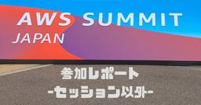
【参加レポート】AWS Summit Japan 2025 〜セッション以外〜
サーバーワークスエンジニアブログ
こんにちは、マネージドサービス部の大城です。 今年も AWS Summit Japan 2025 に参加してきました。当記事ではセッション以外の様子をレポートしたいと思います。 まとめ 2日間では時間が足りない 地方からの参加者は前日入りが良い 体力をつけて望むべき 会場到着まで 沖縄->東京移動 ホテルに荷物を預けてランチ 会場到着 ブース巡り サーバーワークス ブース デロイト トーマツ コンサルティング さんブース トレノケート さんブース New Relic さんブース IBM さんブース セゾンテクノロジー さんブース AWS ビレッジ クラウド運用 ブース 東京->沖縄 帰路 さい…
6日前
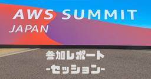
【参加レポート】AWS Summit Japan 2025 〜セッション〜
サーバーワークスエンジニアブログ
こんにちは、マネージドサービス部の大城です。 今年も AWS Summit Japan 2025 に参加してきました。当記事では参加したセッションの要約と感想を書きます。 Amazon Bedrock で作る未来の開発サイクルとオペレーション戦略（CUS-04） 要約 感想 AI によってシステム障害が増える!? ～AI エージェント時代だからこそ必要な、インシデントとの向き合い方～（AP-12） 要約 感想 スペシャルセッションビルダーのための AWS テクノロジー：その深化と進化（SP-01） 要約 ゲストスピーカー：株式会社ドワンゴ ゲストスピーカー：株式会社NTTドコモ ゲストスピーカ…
6日前

【Amazon Connect】セキュリティプロファイルの運用
サーバーワークスエンジニアブログ
Amazon Connectのセキュリティプロファイルはユーザーごとに複数割り当て可能です。 この仕組みを利用した運用例を検討してみます。 概要 シナリオ 設定 受発信オペレーションのみを行うセキュリティプロファイル メトリクス参照のみを行うセキュリティプロファイル 確認 受発信オペレーションのみを行う「Agent」 メトリクス参照のみを行う「MetricsViewer」 受発信オペレーションとメトリクス参照、両方を行う「Agent」+「MetricsViewer」 仕組み 使う場面 まとめ 概要 利用者の多いコンタクトセンターの場合、ユーザーごとに細かく権限を割り当てたいケースがあります。 …
6日前

Salesforce から Cloud Workflows を呼び出してみた②
サーバーワークスエンジニアブログ
Salesforce(Apex) から 認証プロバイダーを使った認証で Cloud Workflows を呼び出す方法の解説です。
8日前
現場目線で、効率的な開発に向けたテスト戦略をまとめてみた
サーバーワークスエンジニアブログ
はじめに 想定読者 テストの前提知識 テストの視点：ブラックボックスとホワイトボックス テストの分類: 正常系, 準正常系, 異常系 テストの種類 テストダブル-MockとFake- テスト戦略 完璧なテストを目指さない 砂時計型のテストアーキテクチャを採用する レイヤードアーキテクチャを採用する レイヤードアーキテクチャのサンプル -カレーを作る- レイヤードアーキテクチャとテストアーキテクチャ テストの種類ごとの洗い出し方と実装のポイント 結合テストを明確にするのは難しい エラーハンドリングのテストは異常系とは限らない テスト設計書を作成するときのポイント テスト設計書サンプル まとめ は…
9日前
Amazon CloudWatchの新機能！生成AIによる運用調査機能を試してみた
サーバーワークスエンジニアブログ
Amazon CloudWatchの新しい調査機能で、AIがシステム異常の根本原因と推奨アクションを自然言語で提示。
9日前
IPv6なんて怖くない！Webサイトをデュアルスタック化してみよう。
サーバーワークスエンジニアブログ
はじめに 一般的な構成とは？ デュアルスタック化する為にはどこを変更すれば良い？ VPCにIPv6 CIDRを追加しよう！ サブネットにIPv6アドレスを追加しよう！ ALBのIPアドレスタイプの変更 IPv6のルーティング設定 最後に はじめに 皆様、IPv6は利用していますでしょうか？ プロバイダー側の対応は終わっていると思いますが、皆様のWebサイトの対応状況はいかがでしょうか。 AWSで一般的な構成でWebサイトを公開している場合は、簡単にデュアルスタック化できてしまいます。 これを機にIPv6の苦手意識をなくしましょう！ 一般的な構成とは？ 以下の図のような基本的なLB・EC2の構成…
9日前
AWS Summit 2025 で特別賞(6年連続 Top Engineer＆全冠)のトロフィーを頂きました
サーバーワークスエンジニアブログ
マネージドサービス部 佐竹です。AWS Summit Japan 2025 で特別賞表彰を頂きましたので感謝と共に頂いた記念品を紹介したいと思います。この度は特別賞を頂き、誠にありがとうございました。
10日前
AWSの管理アカウントのIAM Identity Center経由で、メンバーアカウントのAmazon Managed Grafanaにログインする
サーバーワークスエンジニアブログ
はじめに こんにちは！三宅です！ 最近、データを可視化するために、Amazon Managed Grafana を初めて触りました！ コンソールから「ワークスペースを作成」ボタンを押し、設定を行おうとしたのですが、以下のようなエラーが発生しました。 ※ 認証方法に、IAM Identity Center を選択しました。 ユーザーがこのアプリケーションに対してマルチアカウントアクセスできるようにするには、AWS IAM Identity Center（AWS Single Sign-On の後継）でこのアプリケーションを有効にする必要があります。そのためには、以下の設定タスクを完了する必要があ…
10日前